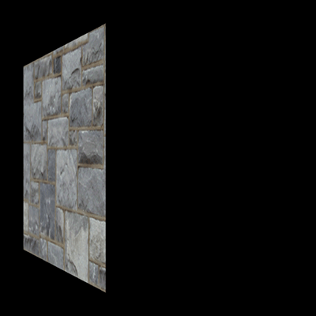
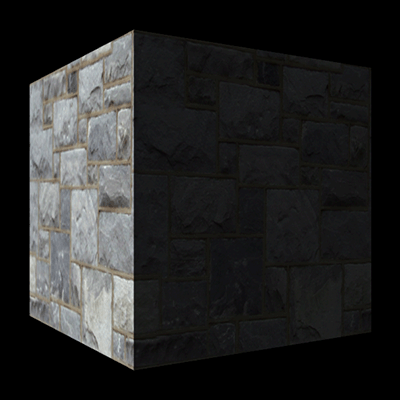

This tutorial will be an introduction to using ambient lighting in DirectX 11 with HLSL.
I will explain ambient lighting using an example.
Imagine you are in a room and the only light source is sunlight which is coming in from a window.
The sunlight doesn't directly point at all the surfaces in the room but everything in the room is illuminated to a certain extent due to bouncing light particles.
This lighting effect on the surfaces that the sun isn't directly pointing at is called ambient lighting.
Now to simulate ambient lighting we use a very simple equation.
We just set each pixel to be the value of the ambient light at the start of the pixel shader.
From that point forward all other operations just add their value to the ambient color.
This way we ensure everything is at a minimum using the ambient color value.
Ambient lighting also adds far more realism to a 3D scene. Take for example the following picture that has only diffuse lighting pointing down the positive X axis at a cube:

The image produced doesn't look realistic because ambient light is almost always everywhere giving everything their proper shape even if it is only slightly illuminated.
Now if we just add 15% ambient white light to the same scene, we get the following image instead:

This now gives us a more realistic lighting effect that we as humans are used to.
We will now look at the changes to the code to implement ambient lighting.
This tutorial is built on the previous tutorials that used diffuse lighting.
We will now add the ambient component with just a few changes.
Light.vs
The light shader is just the diffuse light shader updated from the previous tutorials.
The vertex shader has no code changes to it, only the pixel shader was modified.
////////////////////////////////////////////////////////////////////////////////
// Filename: light.vs
////////////////////////////////////////////////////////////////////////////////
/////////////
// GLOBALS //
/////////////
cbuffer MatrixBuffer
{
matrix worldMatrix;
matrix viewMatrix;
matrix projectionMatrix;
};
//////////////
// TYPEDEFS //
//////////////
struct VertexInputType
{
float4 position : POSITION;
float2 tex : TEXCOORD0;
float3 normal : NORMAL;
};
struct PixelInputType
{
float4 position : SV_POSITION;
float2 tex : TEXCOORD0;
float3 normal : NORMAL;
};
////////////////////////////////////////////////////////////////////////////////
// Vertex Shader
////////////////////////////////////////////////////////////////////////////////
PixelInputType LightVertexShader(VertexInputType input)
{
PixelInputType output;
// Change the position vector to be 4 units for proper matrix calculations.
input.position.w = 1.0f;
// Calculate the position of the vertex against the world, view, and projection matrices.
output.position = mul(input.position, worldMatrix);
output.position = mul(output.position, viewMatrix);
output.position = mul(output.position, projectionMatrix);
// Store the texture coordinates for the pixel shader.
output.tex = input.tex;
// Calculate the normal vector against the world matrix only.
output.normal = mul(input.normal, (float3x3)worldMatrix);
// Normalize the normal vector.
output.normal = normalize(output.normal);
return output;
}
Light.ps
////////////////////////////////////////////////////////////////////////////////
// Filename: light.ps
////////////////////////////////////////////////////////////////////////////////
/////////////
// GLOBALS //
/////////////
Texture2D shaderTexture : register(t0);
SamplerState SampleType : register(s0);
The light constant buffer is updated with a new 4 float ambient color value.
This will allow the ambient color to be set in this shader by outside classes.
cbuffer LightBuffer
{
float4 ambientColor;
float4 diffuseColor;
float3 lightDirection;
float padding;
};
//////////////
// TYPEDEFS //
//////////////
struct PixelInputType
{
float4 position : SV_POSITION;
float2 tex : TEXCOORD0;
float3 normal : NORMAL;
};
////////////////////////////////////////////////////////////////////////////////
// Pixel Shader
////////////////////////////////////////////////////////////////////////////////
float4 LightPixelShader(PixelInputType input) : SV_TARGET
{
float4 textureColor;
float3 lightDir;
float lightIntensity;
float4 color;
// Sample the pixel color from the texture using the sampler at this texture coordinate location.
textureColor = shaderTexture.Sample(SampleType, input.tex);
We set the output color value to the base ambient color.
All pixels will now be illuminated by a minimum of the ambient color value.
// Set the default output color to the ambient light value for all pixels.
color = ambientColor;
// Invert the light direction for calculations.
lightDir = -lightDirection;
// Calculate the amount of light on this pixel.
lightIntensity = saturate(dot(input.normal, lightDir));
Check if the N dot L is greater than zero.
If it is then add the diffuse color to the ambient color.
If not then you need to be careful to not add the diffuse color.
The reason being is that the diffuse color could be negative and it will subtract away some of the ambient color in the addition which is not correct.
if(lightIntensity > 0.0f)
{
// Determine the final diffuse color based on the diffuse color and the amount of light intensity.
color += (diffuseColor * lightIntensity);
}
Make sure to saturate the final output light color since the combination of ambient and diffuse could have been greater than 1.
// Saturate the final light color.
color = saturate(color);
// Multiply the texture pixel and the final diffuse color to get the final pixel color result.
color = color * textureColor;
return color;
}
Lightshaderclass.h
////////////////////////////////////////////////////////////////////////////////
// Filename: lightshaderclass.h
////////////////////////////////////////////////////////////////////////////////
#ifndef _LIGHTSHADERCLASS_H_
#define _LIGHTSHADERCLASS_H_
//////////////
// INCLUDES //
//////////////
#include <d3d11.h>
#include <d3dcompiler.h>
#include <directxmath.h>
#include <fstream>
using namespace DirectX;
using namespace std;
////////////////////////////////////////////////////////////////////////////////
// Class name: LightShaderClass
////////////////////////////////////////////////////////////////////////////////
class LightShaderClass
{
private:
struct MatrixBufferType
{
XMMATRIX world;
XMMATRIX view;
XMMATRIX projection;
};
The LightBufferType has been updated to have an ambient color component.
struct LightBufferType
{
XMFLOAT4 ambientColor;
XMFLOAT4 diffuseColor;
XMFLOAT3 lightDirection;
float padding;
};
public:
LightShaderClass();
LightShaderClass(const LightShaderClass&);
~LightShaderClass();
bool Initialize(ID3D11Device*, HWND);
void Shutdown();
bool Render(ID3D11DeviceContext*, int, XMMATRIX, XMMATRIX, XMMATRIX, ID3D11ShaderResourceView*, XMFLOAT3, XMFLOAT4, XMFLOAT4);
private:
bool InitializeShader(ID3D11Device*, HWND, WCHAR*, WCHAR*);
void ShutdownShader();
void OutputShaderErrorMessage(ID3D10Blob*, HWND, WCHAR*);
bool SetShaderParameters(ID3D11DeviceContext*, XMMATRIX, XMMATRIX, XMMATRIX, ID3D11ShaderResourceView*, XMFLOAT3, XMFLOAT4, XMFLOAT4);
void RenderShader(ID3D11DeviceContext*, int);
private:
ID3D11VertexShader* m_vertexShader;
ID3D11PixelShader* m_pixelShader;
ID3D11InputLayout* m_layout;
ID3D11SamplerState* m_sampleState;
ID3D11Buffer* m_matrixBuffer;
ID3D11Buffer* m_lightBuffer;
};
#endif
Lightshaderclass.cpp
////////////////////////////////////////////////////////////////////////////////
// Filename: lightshaderclass.cpp
////////////////////////////////////////////////////////////////////////////////
#include "lightshaderclass.h"
LightShaderClass::LightShaderClass()
{
m_vertexShader = 0;
m_pixelShader = 0;
m_layout = 0;
m_sampleState = 0;
m_matrixBuffer = 0;
m_lightBuffer = 0;
}
LightShaderClass::LightShaderClass(const LightShaderClass& other)
{
}
LightShaderClass::~LightShaderClass()
{
}
bool LightShaderClass::Initialize(ID3D11Device* device, HWND hwnd)
{
wchar_t vsFilename[128];
wchar_t psFilename[128];
int error;
bool result;
// Set the filename of the vertex shader.
error = wcscpy_s(vsFilename, 128, L"../Engine/light.vs");
if(error != 0)
{
return false;
}
// Set the filename of the pixel shader.
error = wcscpy_s(psFilename, 128, L"../Engine/light.ps");
if(error != 0)
{
return false;
}
// Initialize the vertex and pixel shaders.
result = InitializeShader(device, hwnd, vsFilename, psFilename);
if(!result)
{
return false;
}
return true;
}
void LightShaderClass::Shutdown()
{
// Shutdown the vertex and pixel shaders as well as the related objects.
ShutdownShader();
return;
}
The Render function now takes in an ambient color value which is then sets in the shader before rendering.
bool LightShaderClass::Render(ID3D11DeviceContext* deviceContext, int indexCount, XMMATRIX worldMatrix, XMMATRIX viewMatrix, XMMATRIX projectionMatrix,
ID3D11ShaderResourceView* texture, XMFLOAT3 lightDirection, XMFLOAT4 ambientColor, XMFLOAT4 diffuseColor)
{
bool result;
// Set the shader parameters that it will use for rendering.
result = SetShaderParameters(deviceContext, worldMatrix, viewMatrix, projectionMatrix, texture, lightDirection, ambientColor, diffuseColor);
if(!result)
{
return false;
}
// Now render the prepared buffers with the shader.
RenderShader(deviceContext, indexCount);
return true;
}
bool LightShaderClass::InitializeShader(ID3D11Device* device, HWND hwnd, WCHAR* vsFilename, WCHAR* psFilename)
{
HRESULT result;
ID3D10Blob* errorMessage;
ID3D10Blob* vertexShaderBuffer;
ID3D10Blob* pixelShaderBuffer;
D3D11_INPUT_ELEMENT_DESC polygonLayout[3];
unsigned int numElements;
D3D11_SAMPLER_DESC samplerDesc;
D3D11_BUFFER_DESC matrixBufferDesc;
D3D11_BUFFER_DESC lightBufferDesc;
// Initialize the pointers this function will use to null.
errorMessage = 0;
vertexShaderBuffer = 0;
pixelShaderBuffer = 0;
// Compile the vertex shader code.
result = D3DCompileFromFile(vsFilename, NULL, NULL, "LightVertexShader", "vs_5_0", D3D10_SHADER_ENABLE_STRICTNESS, 0, &vertexShaderBuffer, &errorMessage);
if(FAILED(result))
{
// If the shader failed to compile it should have writen something to the error message.
if(errorMessage)
{
OutputShaderErrorMessage(errorMessage, hwnd, vsFilename);
}
// If there was nothing in the error message then it simply could not find the shader file itself.
else
{
MessageBox(hwnd, vsFilename, L"Missing Shader File", MB_OK);
}
return false;
}
// Compile the pixel shader code.
result = D3DCompileFromFile(psFilename, NULL, NULL, "LightPixelShader", "ps_5_0", D3D10_SHADER_ENABLE_STRICTNESS, 0, &pixelShaderBuffer, &errorMessage);
if(FAILED(result))
{
// If the shader failed to compile it should have writen something to the error message.
if(errorMessage)
{
OutputShaderErrorMessage(errorMessage, hwnd, psFilename);
}
// If there was nothing in the error message then it simply could not find the file itself.
else
{
MessageBox(hwnd, psFilename, L"Missing Shader File", MB_OK);
}
return false;
}
// Create the vertex shader from the buffer.
result = device->CreateVertexShader(vertexShaderBuffer->GetBufferPointer(), vertexShaderBuffer->GetBufferSize(), NULL, &m_vertexShader);
if(FAILED(result))
{
return false;
}
// Create the pixel shader from the buffer.
result = device->CreatePixelShader(pixelShaderBuffer->GetBufferPointer(), pixelShaderBuffer->GetBufferSize(), NULL, &m_pixelShader);
if(FAILED(result))
{
return false;
}
// Create the vertex input layout description.
// This setup needs to match the VertexType stucture in the ModelClass and in the shader.
polygonLayout[0].SemanticName = "POSITION";
polygonLayout[0].SemanticIndex = 0;
polygonLayout[0].Format = DXGI_FORMAT_R32G32B32_FLOAT;
polygonLayout[0].InputSlot = 0;
polygonLayout[0].AlignedByteOffset = 0;
polygonLayout[0].InputSlotClass = D3D11_INPUT_PER_VERTEX_DATA;
polygonLayout[0].InstanceDataStepRate = 0;
polygonLayout[1].SemanticName = "TEXCOORD";
polygonLayout[1].SemanticIndex = 0;
polygonLayout[1].Format = DXGI_FORMAT_R32G32_FLOAT;
polygonLayout[1].InputSlot = 0;
polygonLayout[1].AlignedByteOffset = D3D11_APPEND_ALIGNED_ELEMENT;
polygonLayout[1].InputSlotClass = D3D11_INPUT_PER_VERTEX_DATA;
polygonLayout[1].InstanceDataStepRate = 0;
polygonLayout[2].SemanticName = "NORMAL";
polygonLayout[2].SemanticIndex = 0;
polygonLayout[2].Format = DXGI_FORMAT_R32G32B32_FLOAT;
polygonLayout[2].InputSlot = 0;
polygonLayout[2].AlignedByteOffset = D3D11_APPEND_ALIGNED_ELEMENT;
polygonLayout[2].InputSlotClass = D3D11_INPUT_PER_VERTEX_DATA;
polygonLayout[2].InstanceDataStepRate = 0;
// Get a count of the elements in the layout.
numElements = sizeof(polygonLayout) / sizeof(polygonLayout[0]);
// Create the vertex input layout.
result = device->CreateInputLayout(polygonLayout, numElements, vertexShaderBuffer->GetBufferPointer(), vertexShaderBuffer->GetBufferSize(),
&m_layout);
if(FAILED(result))
{
return false;
}
// Release the vertex shader buffer and pixel shader buffer since they are no longer needed.
vertexShaderBuffer->Release();
vertexShaderBuffer = 0;
pixelShaderBuffer->Release();
pixelShaderBuffer = 0;
// Create a texture sampler state description.
samplerDesc.Filter = D3D11_FILTER_MIN_MAG_MIP_LINEAR;
samplerDesc.AddressU = D3D11_TEXTURE_ADDRESS_WRAP;
samplerDesc.AddressV = D3D11_TEXTURE_ADDRESS_WRAP;
samplerDesc.AddressW = D3D11_TEXTURE_ADDRESS_WRAP;
samplerDesc.MipLODBias = 0.0f;
samplerDesc.MaxAnisotropy = 1;
samplerDesc.ComparisonFunc = D3D11_COMPARISON_ALWAYS;
samplerDesc.BorderColor[0] = 0;
samplerDesc.BorderColor[1] = 0;
samplerDesc.BorderColor[2] = 0;
samplerDesc.BorderColor[3] = 0;
samplerDesc.MinLOD = 0;
samplerDesc.MaxLOD = D3D11_FLOAT32_MAX;
// Create the texture sampler state.
result = device->CreateSamplerState(&samplerDesc, &m_sampleState);
if(FAILED(result))
{
return false;
}
// Setup the description of the dynamic matrix constant buffer that is in the vertex shader.
matrixBufferDesc.Usage = D3D11_USAGE_DYNAMIC;
matrixBufferDesc.ByteWidth = sizeof(MatrixBufferType);
matrixBufferDesc.BindFlags = D3D11_BIND_CONSTANT_BUFFER;
matrixBufferDesc.CPUAccessFlags = D3D11_CPU_ACCESS_WRITE;
matrixBufferDesc.MiscFlags = 0;
matrixBufferDesc.StructureByteStride = 0;
// Create the constant buffer pointer so we can access the vertex shader constant buffer from within this class.
result = device->CreateBuffer(&matrixBufferDesc, NULL, &m_matrixBuffer);
if(FAILED(result))
{
return false;
}
// Setup the description of the light dynamic constant buffer that is in the pixel shader.
// Note that ByteWidth always needs to be a multiple of 16 if using D3D11_BIND_CONSTANT_BUFFER or CreateBuffer will fail.
lightBufferDesc.Usage = D3D11_USAGE_DYNAMIC;
lightBufferDesc.ByteWidth = sizeof(LightBufferType);
lightBufferDesc.BindFlags = D3D11_BIND_CONSTANT_BUFFER;
lightBufferDesc.CPUAccessFlags = D3D11_CPU_ACCESS_WRITE;
lightBufferDesc.MiscFlags = 0;
lightBufferDesc.StructureByteStride = 0;
// Create the constant buffer pointer so we can access the vertex shader constant buffer from within this class.
result = device->CreateBuffer(&lightBufferDesc, NULL, &m_lightBuffer);
if(FAILED(result))
{
return false;
}
return true;
}
void LightShaderClass::ShutdownShader()
{
// Release the light constant buffer.
if(m_lightBuffer)
{
m_lightBuffer->Release();
m_lightBuffer = 0;
}
// Release the matrix constant buffer.
if(m_matrixBuffer)
{
m_matrixBuffer->Release();
m_matrixBuffer = 0;
}
// Release the sampler state.
if(m_sampleState)
{
m_sampleState->Release();
m_sampleState = 0;
}
// Release the layout.
if(m_layout)
{
m_layout->Release();
m_layout = 0;
}
// Release the pixel shader.
if(m_pixelShader)
{
m_pixelShader->Release();
m_pixelShader = 0;
}
// Release the vertex shader.
if(m_vertexShader)
{
m_vertexShader->Release();
m_vertexShader = 0;
}
return;
}
void LightShaderClass::OutputShaderErrorMessage(ID3D10Blob* errorMessage, HWND hwnd, WCHAR* shaderFilename)
{
char* compileErrors;
unsigned __int64 bufferSize, i;
ofstream fout;
// Get a pointer to the error message text buffer.
compileErrors = (char*)(errorMessage->GetBufferPointer());
// Get the length of the message.
bufferSize = errorMessage->GetBufferSize();
// Open a file to write the error message to.
fout.open("shader-error.txt");
// Write out the error message.
for(i=0; i<bufferSize; i++)
{
fout << compileErrors[i];
}
// Close the file.
fout.close();
// Release the error message.
errorMessage->Release();
errorMessage = 0;
// Pop a message up on the screen to notify the user to check the text file for compile errors.
MessageBox(hwnd, L"Error compiling shader. Check shader-error.txt for message.", shaderFilename, MB_OK);
return;
}
The SetShaderParameters function now takes in an ambient light color value.
bool LightShaderClass::SetShaderParameters(ID3D11DeviceContext* deviceContext, XMMATRIX worldMatrix, XMMATRIX viewMatrix, XMMATRIX projectionMatrix,
ID3D11ShaderResourceView* texture, XMFLOAT3 lightDirection, XMFLOAT4 ambientColor, XMFLOAT4 diffuseColor)
{
HRESULT result;
D3D11_MAPPED_SUBRESOURCE mappedResource;
unsigned int bufferNumber;
MatrixBufferType* dataPtr;
LightBufferType* dataPtr2;
// Transpose the matrices to prepare them for the shader.
worldMatrix = XMMatrixTranspose(worldMatrix);
viewMatrix = XMMatrixTranspose(viewMatrix);
projectionMatrix = XMMatrixTranspose(projectionMatrix);
// Lock the constant buffer so it can be written to.
result = deviceContext->Map(m_matrixBuffer, 0, D3D11_MAP_WRITE_DISCARD, 0, &mappedResource);
if(FAILED(result))
{
return false;
}
// Get a pointer to the data in the constant buffer.
dataPtr = (MatrixBufferType*)mappedResource.pData;
// Copy the matrices into the constant buffer.
dataPtr->world = worldMatrix;
dataPtr->view = viewMatrix;
dataPtr->projection = projectionMatrix;
// Unlock the constant buffer.
deviceContext->Unmap(m_matrixBuffer, 0);
// Set the position of the constant buffer in the vertex shader.
bufferNumber = 0;
// Now set the constant buffer in the vertex shader with the updated values.
deviceContext->VSSetConstantBuffers(bufferNumber, 1, &m_matrixBuffer);
// Set shader texture resource in the pixel shader.
deviceContext->PSSetShaderResources(0, 1, &texture);
// Lock the light constant buffer so it can be written to.
result = deviceContext->Map(m_lightBuffer, 0, D3D11_MAP_WRITE_DISCARD, 0, &mappedResource);
if(FAILED(result))
{
return false;
}
// Get a pointer to the data in the constant buffer.
dataPtr2 = (LightBufferType*)mappedResource.pData;
The ambient light color is mapped into the light buffer and then set as a constant in the pixel shader before rendering.
// Copy the lighting variables into the constant buffer.
dataPtr2->ambientColor = ambientColor;
dataPtr2->diffuseColor = diffuseColor;
dataPtr2->lightDirection = lightDirection;
dataPtr2->padding = 0.0f;
// Unlock the constant buffer.
deviceContext->Unmap(m_lightBuffer, 0);
// Set the position of the light constant buffer in the pixel shader.
bufferNumber = 0;
// Finally set the light constant buffer in the pixel shader with the updated values.
deviceContext->PSSetConstantBuffers(bufferNumber, 1, &m_lightBuffer);
return true;
}
void LightShaderClass::RenderShader(ID3D11DeviceContext* deviceContext, int indexCount)
{
// Set the vertex input layout.
deviceContext->IASetInputLayout(m_layout);
// Set the vertex and pixel shaders that will be used to render this triangle.
deviceContext->VSSetShader(m_vertexShader, NULL, 0);
deviceContext->PSSetShader(m_pixelShader, NULL, 0);
// Set the sampler state in the pixel shader.
deviceContext->PSSetSamplers(0, 1, &m_sampleState);
// Render the triangle.
deviceContext->DrawIndexed(indexCount, 0, 0);
return;
}
Lightclass.h
The LightClass was updated for this tutorial to have an ambient component and related helper functions.
////////////////////////////////////////////////////////////////////////////////
// Filename: lightclass.h
////////////////////////////////////////////////////////////////////////////////
#ifndef _LIGHTCLASS_H_
#define _LIGHTCLASS_H_
//////////////
// INCLUDES //
//////////////
#include <directxmath.h>
using namespace DirectX;
////////////////////////////////////////////////////////////////////////////////
// Class name: LightClass
////////////////////////////////////////////////////////////////////////////////
class LightClass
{
public:
LightClass();
LightClass(const LightClass&);
~LightClass();
void SetAmbientColor(float, float, float, float);
void SetDiffuseColor(float, float, float, float);
void SetDirection(float, float, float);
XMFLOAT4 GetAmbientColor();
XMFLOAT4 GetDiffuseColor();
XMFLOAT3 GetDirection();
private:
XMFLOAT4 m_ambientColor;
XMFLOAT4 m_diffuseColor;
XMFLOAT3 m_direction;
};
#endif
Lightclass.cpp
////////////////////////////////////////////////////////////////////////////////
// Filename: lightclass.cpp
////////////////////////////////////////////////////////////////////////////////
#include "lightclass.h"
LightClass::LightClass()
{
}
LightClass::LightClass(const LightClass& other)
{
}
LightClass::~LightClass()
{
}
void LightClass::SetAmbientColor(float red, float green, float blue, float alpha)
{
m_ambientColor = XMFLOAT4(red, green, blue, alpha);
return;
}
void LightClass::SetDiffuseColor(float red, float green, float blue, float alpha)
{
m_diffuseColor = XMFLOAT4(red, green, blue, alpha);
return;
}
void LightClass::SetDirection(float x, float y, float z)
{
m_direction = XMFLOAT3(x, y, z);
return;
}
XMFLOAT4 LightClass::GetAmbientColor()
{
return m_ambientColor;
}
XMFLOAT4 LightClass::GetDiffuseColor()
{
return m_diffuseColor;
}
XMFLOAT3 LightClass::GetDirection()
{
return m_direction;
}
Applicationclass.h
The header for the ApplicationClass hasn't changed for this tutorial.
////////////////////////////////////////////////////////////////////////////////
// Filename: applicationclass.h
////////////////////////////////////////////////////////////////////////////////
#ifndef _APPLICATIONCLASS_H_
#define _APPLICATIONCLASS_H_
///////////////////////
// MY CLASS INCLUDES //
///////////////////////
#include "d3dclass.h"
#include "cameraclass.h"
#include "modelclass.h"
#include "lightshaderclass.h"
#include "lightclass.h"
/////////////
// GLOBALS //
/////////////
const bool FULL_SCREEN = false;
const bool VSYNC_ENABLED = true;
const float SCREEN_DEPTH = 1000.0f;
const float SCREEN_NEAR = 0.3f;
////////////////////////////////////////////////////////////////////////////////
// Class name: ApplicationClass
////////////////////////////////////////////////////////////////////////////////
class ApplicationClass
{
public:
ApplicationClass();
ApplicationClass(const ApplicationClass&);
~ApplicationClass();
bool Initialize(int, int, HWND);
void Shutdown();
bool Frame();
private:
bool Render(float);
private:
D3DClass* m_Direct3D;
CameraClass* m_Camera;
ModelClass* m_Model;
LightShaderClass* m_LightShader;
LightClass* m_Light;
};
#endif
Applicationclass.cpp
////////////////////////////////////////////////////////////////////////////////
// Filename: applicationclass.cpp
////////////////////////////////////////////////////////////////////////////////
#include "applicationclass.h"
ApplicationClass::ApplicationClass()
{
m_Direct3D = 0;
m_Camera = 0;
m_Model = 0;
m_LightShader = 0;
m_Light = 0;
}
ApplicationClass::ApplicationClass(const ApplicationClass& other)
{
}
ApplicationClass::~ApplicationClass()
{
}
bool ApplicationClass::Initialize(int screenWidth, int screenHeight, HWND hwnd)
{
char modelFilename[128];
char textureFilename[128];
bool result;
// Create and initialize the Direct3D object.
m_Direct3D = new D3DClass;
result = m_Direct3D->Initialize(screenWidth, screenHeight, VSYNC_ENABLED, hwnd, FULL_SCREEN, SCREEN_DEPTH, SCREEN_NEAR);
if(!result)
{
MessageBox(hwnd, L"Could not initialize Direct3D", L"Error", MB_OK);
return false;
}
// Create the camera object.
m_Camera = new CameraClass;
// Set the initial position of the camera.
m_Camera->SetPosition(0.0f, 0.0f, -10.0f);
// Set the file name of the model.
strcpy_s(modelFilename, "../Engine/data/cube.txt");
// Set the file name of the texture file that we will be loading.
strcpy_s(textureFilename, "../Engine/data/stone01.tga");
// Create and initialize the model object.
m_Model = new ModelClass;
result = m_Model->Initialize(m_Direct3D->GetDevice(), m_Direct3D->GetDeviceContext(), modelFilename, textureFilename);
if(!result)
{
MessageBox(hwnd, L"Could not initialize the model object.", L"Error", MB_OK);
return false;
}
// Create and initialize the light shader object.
m_LightShader = new LightShaderClass;
result = m_LightShader->Initialize(m_Direct3D->GetDevice(), hwnd);
if(!result)
{
MessageBox(hwnd, L"Could not initialize the light shader object.", L"Error", MB_OK);
return false;
}
Set the intensity of the ambient light to 15% white color.
Also set the direction of the light to point down the positive X axis so we can directly see the effect of ambient lighting on the cube.
// Create and initialize the light object.
m_Light = new LightClass;
m_Light->SetAmbientColor(0.15f, 0.15f, 0.15f, 1.0f);
m_Light->SetDiffuseColor(1.0f, 1.0f, 1.0f, 1.0f);
m_Light->SetDirection(1.0f, 0.0f, 0.0f);
return true;
}
void ApplicationClass::Shutdown()
{
// Release the light object.
if(m_Light)
{
delete m_Light;
m_Light = 0;
}
// Release the light shader object.
if(m_LightShader)
{
m_LightShader->Shutdown();
delete m_LightShader;
m_LightShader = 0;
}
// Release the model object.
if(m_Model)
{
m_Model->Shutdown();
delete m_Model;
m_Model = 0;
}
// Release the camera object.
if(m_Camera)
{
delete m_Camera;
m_Camera = 0;
}
// Release the Direct3D object.
if(m_Direct3D)
{
m_Direct3D->Shutdown();
delete m_Direct3D;
m_Direct3D = 0;
}
return;
}
bool ApplicationClass::Frame()
{
static float rotation = 0.0f;
bool result;
// Update the rotation variable each frame.
rotation -= 0.0174532925f * 0.25f;
if(rotation < 0.0f)
{
rotation += 360.0f;
}
// Render the graphics scene.
result = Render(rotation);
if(!result)
{
return false;
}
return true;
}
bool ApplicationClass::Render(float rotation)
{
XMMATRIX worldMatrix, viewMatrix, projectionMatrix;
bool result;
// Clear the buffers to begin the scene.
m_Direct3D->BeginScene(0.0f, 0.0f, 0.0f, 1.0f);
// Generate the view matrix based on the camera's position.
m_Camera->Render();
// Get the world, view, and projection matrices from the camera and d3d objects.
m_Direct3D->GetWorldMatrix(worldMatrix);
m_Camera->GetViewMatrix(viewMatrix);
m_Direct3D->GetProjectionMatrix(projectionMatrix);
// Rotate the world matrix by the rotation value so that the model will spin.
worldMatrix = XMMatrixRotationY(rotation);
// Put the model vertex and index buffers on the graphics pipeline to prepare them for drawing.
m_Model->Render(m_Direct3D->GetDeviceContext());
The light shader now takes in as input the ambient color of the light.
// Render the model using the light shader.
result = m_LightShader->Render(m_Direct3D->GetDeviceContext(), m_Model->GetIndexCount(), worldMatrix, viewMatrix, projectionMatrix, m_Model->GetTexture(),
m_Light->GetDirection(), m_Light->GetAmbientColor(), m_Light->GetDiffuseColor());
if(!result)
{
return false;
}
// Present the rendered scene to the screen.
m_Direct3D->EndScene();
return true;
}
Summary
With the addition of ambient lighting all surfaces now illuminate to a minimum degree to produce a more realistic lighting effect.
To Do Exercises
1. Recompile the code and ensure you get a spinning cube that is illuminated on the dark side now.
2. Change the ambient light value to (0.0f, 0.0f, 0.0f, 1.0f) to see just the diffuse component again.
3. Comment out the color = color * textureColor; line in the pixel shader to see just the lighting effect.
Source Code
Source Code and Data Files: dx11win10tut09_src.zip